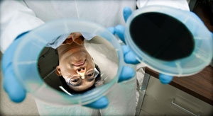

Below are some of the prestigious awards won and accomplishments earned by projects funded through EERE's Solar Energy Technologies Office, which manages the overall direction of the SunShot Initiative.
SunShot builds on a legacy of successful collaboration between pioneers in the solar industry and the DOE Solar Office. Photovoltaic (PV) research sponsored by the Solar Program has resulted in 274 patent families, and 30% of other patents in the solar energy field are linked to EERE-attributed patents—more than any other organization.
Many of the research achievements were awarded to DOE's industry and university partners working together with the national laboratories, including the National Renewable Energy Laboratory (NREL), Sandia National Laboratories (SNL), Lawrence Berkeley National Laboratory (Berkley Lab), Oak Ridge National Laboratory (ORNL), and Pacific Northwest National Laboratory (PNNL).
Industry Awards
The following awards recognized recent achievements in science and research by DOE Solar Office partners.
2012
Technology Review's 50 Most Innovative Companies of 2012: Alta Devices, a 2009 Incubator awardee, received this designation for developing high-efficiency gallium arsenide–based solar cells that provide a way to lower the cost of solar.
World Record Efficiency for HCPV Solar Module: Semprius achieved 33.9% conversion efficiency with its high concentration photovoltaic module that uses a proprietary micro-transfer printing process developed under a 2009 Incubator award.
World Record Efficiency for CdTe Solar Module: First Solar set a new world record for cadmium-telluride (CdTe) solar module efficiency, achieving 14.4% total area efficiency. Just six months earlier, the company set the CdTe solar cell record at 17.3%.
2011
Guinness World Record for Commercially Available PV Module: SunPower, whose manufacturing line development was supported by the Solar Program, received recognition for having the most energy efficient PV module available on the market at 22.4%.
World Record Efficiency for CPV Solar Cell: NREL confirmed 43.5% conversion efficiency for Solar Junction's multi-junction concentrating photovoltaic cell, which employs multiple semiconductor layers in order to absorb more wavelengths of sunlight. Solar Junction was a 2009 Incubator awardee
R&D 100 Awards
Awarded by R&D Magazine, the R&D 100 Awards honor the top 100 innovations of the year and showcase the best new technologies from around the world. Below are the winning inventions listed by year and the DOE national laboratories and Solar Program partners that received awards.
2016
The Falling Particle Receiver for Concentrated Solar Energy: Sandia National Laboratories designed this technology to lower the cost and improve the efficiencies of solar energy systems. It works by dropping sand-like ceramic particles through a beam of concentrated sunlight, capturing and storing the heated particles in an insulated tank. The technology can capture and store heat at high temperatures without breaking down, unlike conventional molten salt systems. Read the success story about this project.
2014
Solar Thermochemical Advanced Reactor System (STARS): The Pacific Northwest National Laboratory created STARS with the help of a SunShot CSP R&D award. The system concentrates solar power to convert natural gas into synthesis gas (syngas), enabling natural gas power plants to make electricity while using 20% less fuel. STARS sets a world record for converting solar energy to chemical energy with 69% efficiency.
2013
TetraCell Solar Cells: With support from a 2009 SunShot Incubator award, TetraSun developed an innovative solar cell architecture that allows for a greater percentage of incoming sunlight to be converted to electricity relative to conventional crystalline solar cells. Additionally, the company reduced the typical manufacturing cost of high-efficiency solar cells by applying a more streamlined, simplified process flow and eliminating certain costly materials.
Solar Glare Hazard Analysis Tool (SGHAT): Sandia National Laboratories developed SGHAT, a Web-based tool and methodology to evaluate potential glare hazards associated with solar energy installations, with support from the SunShot Initiative. The tool can quickly locate a site, outline the proposed array, and identify glare throughout the year, calculating the glare's intensity and size to predict potential ocular hazards.
2012
Microsystems Enabled Photovoltaics (MEPV): MPEV cells are tiny, glitter-sized photovoltaic (PV) cells also known as "solar glitter." These PV cells are created using mature microdesign and microfabrication techniques, then released into a solution similar to printing ink and printed onto a low-cost substrate with embedded contacts and microlenses for focusing sunlight onto the cells. MPEV technology has potential applications in buildings, houses, clothing, portable electronics, vehicles, and other contoured structures. (Sandia National Laboratories)
SJ3 Solar Cell: This triple-junction solar cell achieved a world-record conversion efficiency of 43.5% with potential to reach 50%. Like a three-blade safety razor that uses all its blades for a closer shave, the SJ3 cell captures different light frequencies, ensuring the best conversion of photons to electrons. The 43.5% efficiency occurs under lens-focused light having 418 times the intensity of the sun. (National Renewable Energy Laboratory and Solar Junction)
2011
Flash Quantum Efficiency System: The ability to measure, in a second, the quantum efficiency of a PV solar cell lets manufacturers assemble more reliable modules by taking into account blue and red variations in a solar cell's spectral responses. (NREL and Tau Science Corporation)
Optical Cavity Furnace: A new optical furnace uses photons to uniformly heat crystalline solar cells and semiconductor materials, increasing the efficiency of the cells by 3% to 4% at a fraction of the cost of conventional, thermal ovens. (NREL and AOS Solar)
Silicon Ink for High-Efficiency Solar Cells: Screen printing a liquid form of silicon produces an immediate increase in solar cell efficiency by allowing lighter doping, thus enhancing response to the blue portion of the spectrum. The cost-effective process will boost cell efficiency by about 6% and improve the manufacturing bottom line by up to 20%. (NREL and Innovalight)
Ultra-High-Voltage Silicon Carbide Thyristor: This semiconductor-based, ultra-high-voltage, silicon-carbide thyristor allows next-generation "smart grid" power electronics systems to be built that are as much as 10 times smaller and lighter than current silicon-based technologies. (GeneSiC Semiconductor, SNL, DOE, and U.S. Army/ERDC)
Demand Response Inverter: Adding value for the system owner and local utility, the Demand Response Inverter reduces the levelized cost of energy of PV power and provides grid-support functionality that encourages high penetration of PV power systems into the electrical grid. (SNL and Princeton Power Systems)
2010
NREL research scientist Hao-Chih Yuan displays silicon wafers before (left) and after (right) the wet-chemical etching process that creates award-winning "black silicon" solar cells. Photo by Dennis Schroeder, NREL/PIX 17852
Black Silicon Nanocatalytic Wet-Chemical Etch: Inexpensive, one-step, "black silicon" solar cells—chemically etched to appear black—better absorb the sun's energy and reduce light reflection from silicon wafers to less than 2%, promising to reduce manufacturing cost and capital expense. (NREL)
Amonix 7700 Solar Power Generator: This highly concentrated, highly efficient bulk power generator produces 40% more energy than conventional fixed PV panels. (NREL and Amonix)
Multifunctional Optical Coatings by Rapid Self-Assembly: This process creates film-like coatings under ambient conditions, without high temperatures or considerable vacuum, for consumer electronics, semiconductor devices, and high-performance glass and ceramics. (SNL and Lockheed Martin Aerodynamics)
Micro Power Source: A battery covered by thin-film PV harvests sunlight and recharges itself. The 1-microliter volume device operates at a high-peak-power density greater than 1,000 watts per liter, making the device useful for powering wireless micro-systems that sense, record, transmit, and/or actuate. (SNL, PNNL, Front Edge Technology, University of California, Los Angeles, and The Henry Samuel School of Engineering and Applied Science)
2009
Nanocrystal Solar Cells:They are ultra-thin solar cells based on dense nanocrystal films, without any organic materials. They have an efficiency potential of about 25%, matching that of silicon cells. (Berkeley Lab and Solexant)
PulseForge 3100 with Pulse Thermal Processing: This unique thermal processing technique applies extremely high-intensity radiant heat to the surface of materials quickly (milliseconds to microseconds). The PulseForge 3100 is a commercial tool that employs this technology for high-speed drying, curing, sintering, or annealing high-temperature materials on plastic and paper, enabling inexpensive and flexible electronics and solar applications. (ORNL)
SkyTrough™ Parabolic Trough Solar Concentrating Collector: It uses a glass-free, slide-in mirror that is lightweight and weather proof to create a ground-breaking and low-cost system for utility-sized power generation. (NREL and SkyFuel)
Ultra-Accelerated Weathering System: A multifaceted ultraviolet solar concentrator that is used to speed up the exposure of coatings, paints, and other materials to determine their durability and resistance to weathering. (NREL)
2008
Inverted Metamorphic Multijunction Solar Cell: In this new method, the cell is grown upside down. These layers use high-energy materials with extremely high quality crystals, especially in the upper layers of the cell where most of the power is produced. (NREL, Emcore Corp., and Air Force Research Laboratories Space Vehicles Directorate)
Hybrid CIGS (Copper Indium Gallium Diselenide): This thin-film PV manufacturing process combines precursor inks with a rapid reactive bonding technique, eliminating complex manufacturing methods. (NREL and HelioVolt Corp.)
2007
High-Efficiency Metamorphic Multijunction (HEMM) Concentrator Solar Cell: The HEMM solar cell is a triple-junction device—a solar cell with three layers—that uses "mismatched" materials. It is the first solar cell to break the 40% conversion efficiency barrier—the solar equivalent of breaking the four-minute mile. (NREL/ Boeing Spectrolab)
2006
High Efficiency Multiband Semiconductor Material for Solar Cells: This material is designed to improve the efficiency by capturing low-energy photons and can reduce the complexity and manufacturing costs associated with high solar efficiencies. (Berkeley Lab)
Hybrid Solar Lighting: This technology uses a rooftop-mounted, 48-inch diameter collector and secondary mirror that track the sun throughout the day. The collector system focuses the sunlight into numerous optical fibers connected to light fixtures equipped with diffusion rods similar to fluorescent light bulbs. (ORNL)
2005
Sinton QSSPC Silicon Evaluation System: The system helps manufacturers detect impurities and defects in silicon material early in the solar cell production process—thus saving manufacturers processing time, money, and silicon feedstock. The result is a higher yield of efficient cells and reduced manufacturing costs. (NREL)
2004
Lightweight, Flexible, Thin-Film CIGS PV Modules: This was the first portable, flexible PV system made from CIGS for use in mobile applications. It was lighter, cheaper, and more efficient and reliable than previous amorphous silicon technologies. (NREL, Global Solar, and ITN Energy Systems)
2003
High-Rate Vapor Transport Deposition for CdTe (Cadmium Telluride) PV Modules: This simple deposition technology could deposit a thin, uniform layer of CdTe or CdS over the glass substrate in less 40 seconds—a deposition rate that was 3 to 4 orders of magnitude greater than rival thin-film PV technologies. (First Solar and NREL)
2002
PowerView™ Semi-Transparent Photovoltaic Module: It is semi-transparent, making it ideal to be used in lieu of architectural glass for many applications, particularly for those that call for sloped glazing, such as awnings, canopies, or slanted roofs. (BP Solar and NREL)
2001
Triple-Junction Terrestrial Concentrator Solar Cell: The cell converted as much as 34% of sunlight to electricity, which was almost 40% higher than its nearest competitor. Also, at its highest rated concentration (1200 suns), the cell produced three times the power of its nearest competitor. (NREL)
2000
Electroexploded Metal Nanopowders: These were a new approach to ultrafine metal powder production. The nanopowders were low-cost, could be made with a broad range of metals, and the particles were up to 500 times smaller than those in previous commercially available metal powders. (NREL)
1999
Siemens Solar St-Family of Solar (CIS) Modules: The first large-area solar electric modules made from the promising thin-film material of copper indium diselenide. (NREL)
1998
UNI-SOLAR Triple-Junction Amorphous-Silicon Solar-Electric Modules: Thin, flexible, waterproof roof shingles that efficiently produce electricity from sunlight. (NREL)
1997
"PV Optics" Software Light-Trapping Model for Solar Cells: Software that enhances and accelerates solar cell designs by modeling how light is absorbed in cell materials. (NREL)
1995
Method for Making Silicon Carbide Powder: A novel technique for producing fine, pure, inexpensive powder for use in making industrial and electronic ceramic products. (NREL)
1994
Transpired Solar Collector: A simple, elegant idea—a perforated metal wall that captures solar energy to heat and ventilate buildings. (NREL)
1993
Scanning Defect Mapping System: Uses a scanning laser to produce maps of crystal defects in semiconductor materials. (NREL)
Aqueous Chelating Etch: An innovative etching process used to develop microelectronic circuits, high-temperature superconductors, and opto-electronic devices. (NREL)
1992
Atomic Processing Microscope: This microscope enables the manipulation of single atoms and allows the properties of electronic materials to be altered on a nanoscale. (NREL)
Solar Detoxification of Hazardous Organic Materials in Groundwater: Uses sunshine and a simple catalyst to purify contaminated water. (NREL)
1991
Gallium Indium Phosphide/Gallium Arsenide Tandem Solar Cell: A light, highly efficient solar cell that has become the world's standard for powering earth-orbiting satellites. (NREL)
CdTe PV Modules: The first large-size devices to be made from this new thin-film material, which promises to help drop the cost of solar electricity. (NREL)
1989
Spectroscopic Scanning Tunneling Microscope: At the forefront of nanotechnology, this instrument characterizes electro-optical materials down to the atomic scale. (NREL)
1985
Volume-Indexed Secondary Ion Mass Spectrometry: Provides 3-D information about the composition of electronic materials and devices. (NREL)
1984
Copper Indium Diselenide Solar Cell: The first solar cell to use very thin films (less than the thickness of a human hair) of a promising semiconductor material. (NREL)
1979
Low Cost Laser-Diffused Solar Cells (ORNL)
Additional Technical Awards
The following awards recognize the Solar Program's achievements in science and research.
2002
Scientific American 50: This award recognized the world's most efficient land-based solar cell. (NREL and Spectrolab)